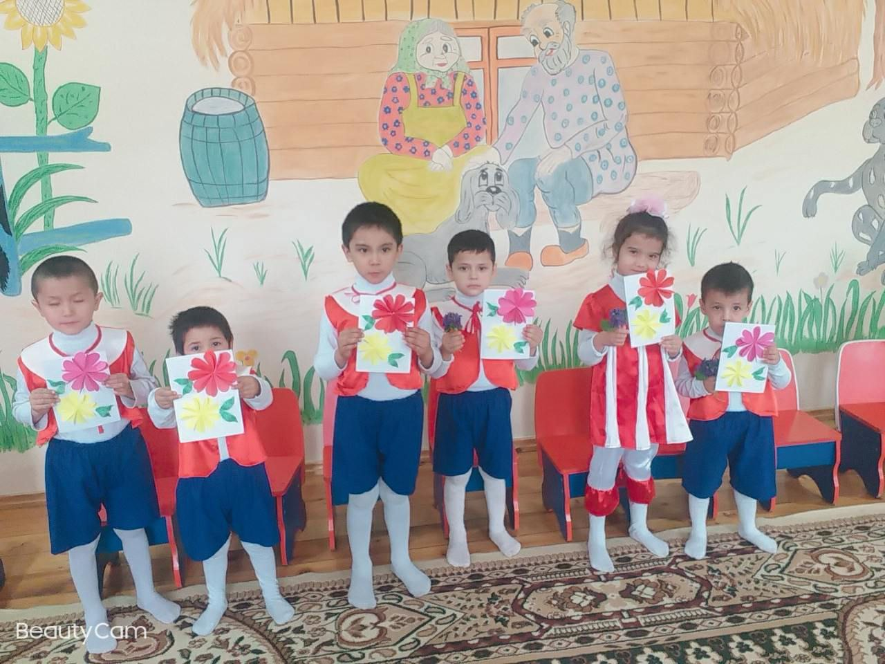
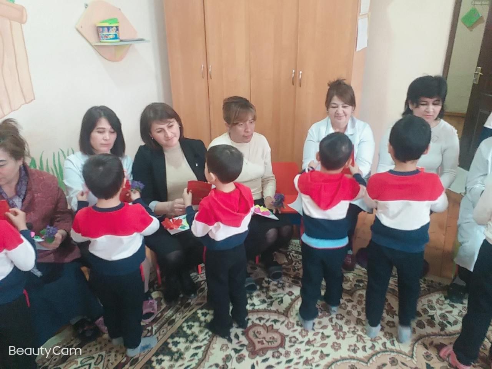
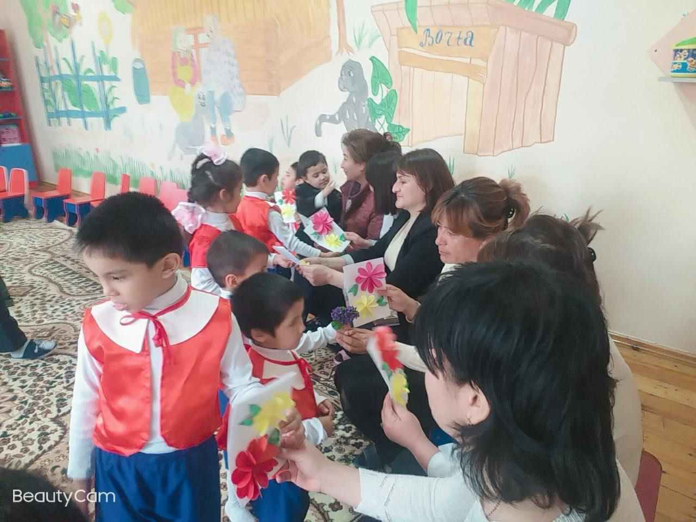
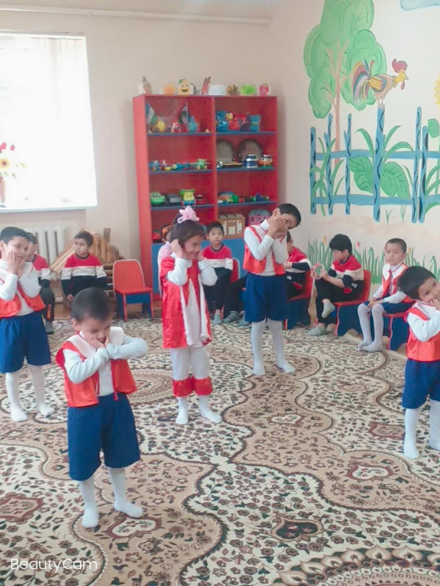
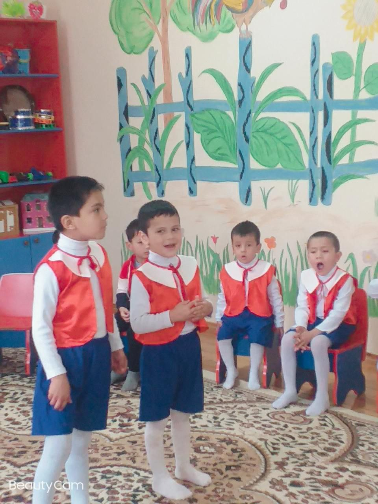
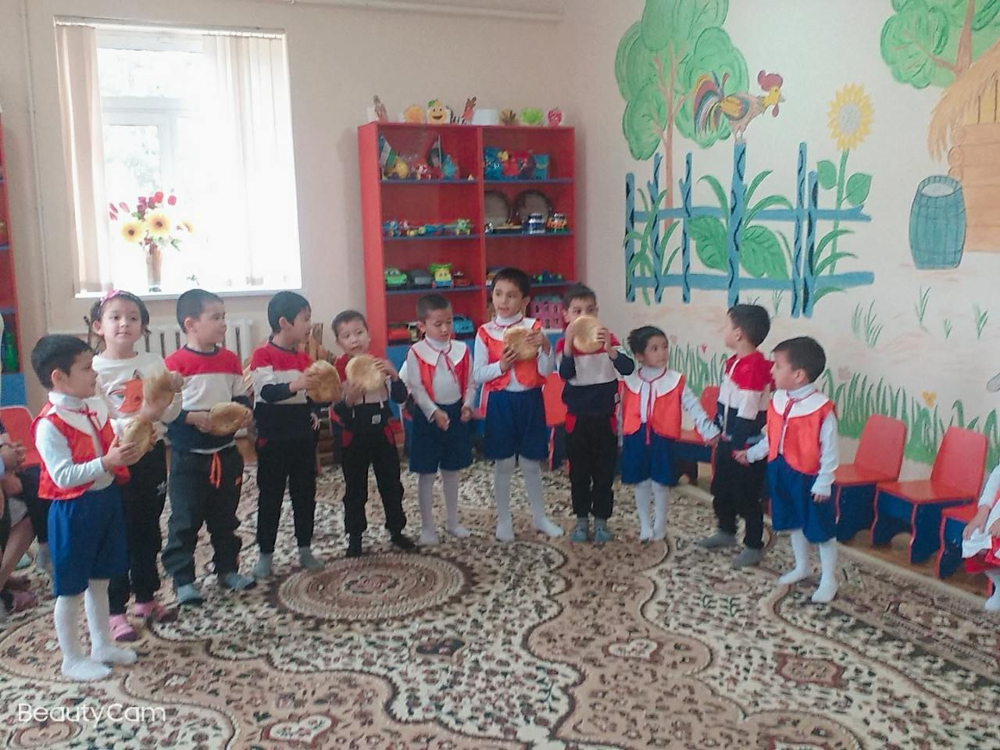

Tadbir
8 – mart “Xalqaro xotin – qizlar bayrami”
79-sonli maxsus maktab internatida 1 – mart Zulfiya tavalludining 107 yilligi hamda “Xalqaro xotin – qizlar bayrami” ni munosib kutib olish va nishonlash uchun qator ishlar amalga oshirildi.
Maktabin ternatida xotin – qizlar qo`mitasi bilan hamkorlikda bayram tadbirini o`tkazish yuzasidan yig`ilish o`tkazildi.
Bayram munosabati bilan shanbalik o`tkazilib, maktab internatida onalarni ulug`lovchi ko`rgazmalar bilan bayramona bezatildi.
Devoriy gazetalarning navbatdagi soni Zullfiya hayoti va ijodi hamda 8 – mart “Xalqaro xotin – qizlar kuni” ga atab guruhlarda tayyorlandi.
“Sen baribir muqaddassan, muqaddas ayol” mavzusida davra suhbati o`tkazilib, unda maktabda ko`p yillar samarali mehnat qilgan nafaqadagi o`qituvchi ayollar ishtirok etishdi va yig`ilganlarga o`z hayot tajribalari haqida so`zlab berishdi. Maktab internatida ko`p yillar fidokorona mehnat qilib ayni damda keksalik gashtini surayotgan onaxon – murabbiylar holidan xabar olib esdalik sovg`alari topshirildi.
Bayram munosabati bilan maktab internatining boshlang`ich sinf o`quvchilari tomonidan “Siz quyoshsiz onajon ”mavzusida tadbir bo`lib o`tdi . Tadbirda o`quvchilar o`zlarining she`r va qo`shiqlari bilan barchani hushnud etdilar.
Tadbirda 30-sonli musiqa maktabi raqs to`garagi a`zolari o`zlarining namunali raqslari bilan bolalar quvonchiga quvonch ulashdilar.
Xalqaro xotin – qizlar kuni munosabati bilan onalarni ulug`lovchi “Jannat onalar oyog`i ostidadir”, “Ustozim onam”, “Rasmlarda ona timsoli” rasmlar tanlovi va bayram tabriknomalar yasadilar. Tanlovda g`oliblarga esdalik sovg`alari topshirildi. O`quvchi qizlar o`rtasida 8 – martga bag`ishlangan “Pazanda qiz” tanlovi guruhlarda o`tkazildi.
Zulfiya tavalludining 107 yilligi hamda bayram munosabati bilan 1 – mart kuni “Zulfiya izdoshlari ” ko`rik tavlovi o`tkazilib, unda 5 – 9 – sinf o`quvchi qizlaridan 6 nafari g`oliblik uchun bahs olib borishdi.
Bizning Galleriya
- 
- 
- 
- 
- 
- 